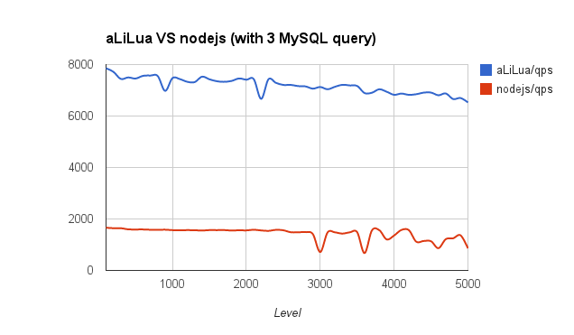

aLiLua
next generation web server for lua
Current Version: v0.50
##介绍
aLiLua 是一个基于 epoll/kqueue/LuaJIT 构建的 Web Server
使用 epoll/kqueue 进行网络/文件IO事件驱动对 Lua 协程进行调度，其性能高效并且简单
###简单的同步代码逻辑
在 aLiLua 开发框架之下的 Lua 脚本跟 PHP 语言类似，但却支持非堵塞IO，只消耗很少的系统资源就可获取到很高的并发处理性能。
```
local sock = cosocket:tcp()
local r,e = sock:connect(host, port)
r,e = sock:send('data')
r,e = sock:read('*a')
print(r)
sock:close()
```
例子中6行代码，中间3行就是非堵塞的网络IO操作。作为 Lua 脚本开发者无需关系IO操作类型，在 aLiLua 框架下所有IO操作均是非堵塞模式。开发者只要专心于业务逻辑的开发即可
###轻松的并发处理
```
function download(host, uri)
return newthread(function(host, uri)
local sock = cosocket:tcp()
local r,e = sock:connect(host, port)
r,e = sock:send(...)
r,e = sock:read(...)
return r,e
end, host, uri)
end
local t1 = download('www.alilua.com', '/')
local t2 = download('www.alilua.com', '/docs.html')
local r,e
r,e = wait(t1)
r,e = wait(t2)
```
上面的例子可以并行下载两个页面(跟下载工具的多线程下载类似)，可在一个时间内一起做几件事情，减少整体的业务处理耗时
##高性能
测试环境: Intel(R) Pentium(R) CPU G620 @ 2.60GHz, 4GB DDR3, (Linux 3.2.0-4-amd64)
###Echo
###MySQL

##安装使用
**基础库 OpenSSL**
```bash
$ sudo apt-get install libssl-dev (Ubuntu)
$ sudo yum install openssl-devel (CentOS)
```
###下载 aLiLua (最新版)
```bash
$ git clone https://github.com/oneoo/alilua
或者: $ wget https://github.com/oneoo/alilua/archive/master.zip
```
###编译安装
```bash
$ cd alilua
$ make
$ sudo make install
```
安装路径: /usr/local/alilua/
_注意:如通过 git pull 更新代码，请注意更新后再执行 make update 以更新子项目代码_
###启动
```bash
$ sudo /usr/local/alilua/alilua bind=80 ( 更多启动参数请查看 /usr/local/alilua/alilua --help )
```
####默认方式启动
使用 /usr/local/alilua/host-route.lua 作为虚拟主机配置
使用 /usr/local/alilua/route.lua 作为默认应用的路由器
应用代码默认路径 /usr/local/alilua/
##文档
###基础变量
####headers
客户端请求的 HTTP 头信息，类型 table
```
dump(headers, 1)
--[[ 将输出以下信息
accept-language = "zh-CN,zh;q=0.8",
connection = "keep-alive",
accept = "text/html,application/xhtml+xml,application/xml;q=0.9,image/webp,*/*;q=0.8",
accept-encoding = "gzip,deflate,sdch",
host = "localhost:19827",
method = "GET",
uri = "/",
query = "?key=value",
remote-addr = "127.0.0.1",
user-agent = "Mozilla/5.0 (Macintosh; Intel Mac OS X 10_9_3) AppleWebKit/537.36 (KHTML, like Gecko) Chrome/35.0.1916.153 Safari/537.36",
]]
```
####_GET
客户端请求的 GET 变量信息，类型 table
```
dump(_GET, 1)
--[[ 将输出以下信息
key = "value",
]]
```
####_COOKIE
客户端请求的 _COOKIE 变量信息，类型 table
###POST请求处理
当客户端请求头信息接收完成后，即进入 Lua 业务处理逻辑，此时 POST 请求的 Body 信息并未完全读取，为支持流式处理方式，所以提供以下几个方法
**注意:** _该方法不支持 multipart 格式的表单数据 (因针对 multipart 格式的表单数据，value 部分要求流式读取)_
####parse_www_form
完全读取 Body 并以表单格式解释，返回结果为 table 类型
```
_POST = parse_www_form()
dump(_POST, 1)
--[[
key = "value",
]]
--支持同名变量数组，需表单字段名以 [] 结尾，如："keys[]"
--[[
keys = {
[1] = "value",
}
]]
```
####next_post_field
读取 Body 并以表单格式解释，以获取一个字段和对应的值。需自行循环读取，直到返回值 key 为 nil 表示处理结束
**注意:** _判断返回值，如 value 为 nil 并且 chunkread 为 true 表示为文件内容字段，需特殊处理_
```
local key,value,chunkread,filename,filetype = next_post_field()
while key do
print(key, value)
if chunkread then
--读取文件内容，并写入临时文件
local fh,en,e
if filename then
fh,en,e = eio.open('/tmp/a', 'w')
if not fh then
print(fh,en,e)
end
end
local chunk = read_post_field_chunk()
while chunk do
print('[', filename and #chunk or chunk, ']', "\n")
if filename then fh:write(chunk) end
chunk = read_post_field_chunk()
end
if filename then fh:close() end
end
key,value = next_post_field()
end
```
####read_post_field_chunk
读取文件字段的内容。需自行循环读取，直到返回值为 nil 表示结束
####read_request_body
读取 POST 请求的 Body 内容。需自行循环读取，直到返回值为 nil 表示结束 (一般用于处理 PUT 请求)
```
local chunk,err = read_request_body()
while chunk do
chunk,err = read_request_body()
end
```
###常用方法
####echo
输出内容 (内存缓存，业务结束或执行 `flush` 才真正发送到客户端，如内存缓存大于 900KB 将自动 `flush`)
```
echo(string)
echo({string1, string2, ...})
```
####print
同上 echo
###printf
按格式输出内容
```
printf(formatstring, [values ...])
```
输出具有特定格式的字符串, 函数的第一个参数是格式(formatstring), 之后是对应格式中每个代号的各种数据. 由于格式字符串的存在, 使得产生的长字符串可读性大大提高了. 这个函数的格式很像C语言中的printf().函数string.format在用来对字符串进行格式化的时候，特别是字符串输出，是功能强大的工具。这个函数有两个参数，你完全可以照C语言的printf来使用这个函数。第一个参数为格式化串：由指示符和控制格式的字符组成。指示符后的控制格式的字符可以为：十进制'd'；十六进制'x'；八进制'o'；浮点数'f'；字符串's'。在指示符'%'和控制格式字符之间还可以有其他的选项：用来控制更详细的格式，比如一个浮点数的小数的位数：
格式字符串可能包含以下的转义码:
%c - 接受一个数字, 并将其转化为ASCII码表中对应的字符
%d, %i - 接受一个数字并将其转化为有符号的整数格式
%o - 接受一个数字并将其转化为八进制数格式
%u - 接受一个数字并将其转化为无符号整数格式
%x - 接受一个数字并将其转化为十六进制数格式, 使用小写字母
%X - 接受一个数字并将其转化为十六进制数格式, 使用大写字母
%e - 接受一个数字并将其转化为科学记数法格式, 使用小写字母e
%E - 接受一个数字并将其转化为科学记数法格式, 使用大写字母E
%f - 接受一个数字并将其转化为浮点数格式
%g(%G) - 接受一个数字并将其转化为%e(%E, 对应%G)及%f中较短的一种格式
%q - 接受一个字符串并将其转化为可安全被Lua编译器读入的格式
%s - 接受一个字符串并按照给定的参数格式化该字符串
####header
输出 HTTP 头信息 (总大小小于 3KB)
```
header('Content-Type: text/html')
header({'Content-Type: text/html',
'X-Header: x'
})
```
####setcookie
输出 cookie 信息
```
setcookie(name, value, [expire, path, domain, secure, httponly])
```
####clear_header
清空输出的 HTTP 头信息
```
clear_header()
```
####flush
发送内存缓存中的内容到客户端 (HTTP Chunked 协议)
```
flush()
flush(string)
flush({string1, string2, ...})
```
####die
终止业务逻辑执行，并输出内容到客户端
```
die([string])
```
####swop
短暂睡眠 (大概 0.01秒)，使得在大的循环体中可以把 CPU 运行权限交予 epoll loop 处理其他IO事件，以避免堵塞
####newthread
创建一个协程并执行
```
local t,err = newthread(function() ... end)
```
####wait
等待并捕获协程执行结果（如协程已结束，只返回 true）
```
local t,err = newthread(function() ... end)
local r = wait(t)
```
###cosocket非堵塞网络IO操作方法
####cosocket.tcp
打开一个TCP链接，并提供以下操作方法：
- connect
- send
- receive
- settimeout
- setkeepalive
- close
```
cok = cosocket.tcp()
--SSL
scok = cosocket.tcp(true)
--SSL 证书验证
scok = cosocket.tcp(cert-file-path, key-file-path[, key password])
```
#####cok:connect
连接到服务器，支持IP连接也支持 UNIX Domain Socket 连接。cosocket 默认所有连接是持久的，并支持连接池功能，如需开启连接池可在 connect 方法调用时传入 pool_size 连接池大小即可。但对于 MySQL 类对连接有身份验证要求，则可设置 pool_key 连接池组名来避免错误分配
_注意: 连接池中的连接生命时间为60秒，会自动关闭过期的连接_
```
local ok,err = cok:connect(host, port[, pool_size[, 'pool_key']])
```
#####cok:send
在当前连接发送数据，调用参数支持 string 和 table 或多个 string 参数
```
local ok,err = cok:send('data')
local ok,err = cok:send('data1', 'data2',...)
local ok,err = cok:send({'data1', 'data2',...})
```
#####cok:receive
在当前连接读取数据，调用参数可以是 'l', 'a' 或 大小(数字)
- '*l': 读取一行数据，以 \n 分割（或者是连接已断开，缓冲区中剩余且不带\n分割的数据）
- '*a': 读取缓冲区中的数据，如缓冲区为空则发起一次网络读取的系统操作，协程休眠到数据返回时
- num: 读取指定字节大小的数据，如连接已断开则可能返回少于指定的读取大小
**如不指定参数，默认以 'l' 读取一行数据的模式执行**
```
local data,err = cok:reveive([pattern])
```
#####cok:settimeout
设置连接超时（单位: 毫秒），请在创建连接后设置超时时间，超时时间对网络连接、读取和写入都有效
**注: 连接超时时间是 settimeout 设定值的一半**
#####cok:setkeepalive
设置长连接的连接池大小和组名，并关闭当前链接
```
cok:setkeepalive(size, ['pool key'])
```
#####cok:close
关闭当前连接，如该连接有设置连接池则会放入连接池内，并不会真正关闭
####cosocket.udp
打开一个UDP链接，并提供以下操作方法：
- setpeername
- send
- receive
- settimeout
- close
#####udp:setpeername
设定链接的目标地址和端口
```
local ok,err = udp:setpeername('8.8.8.8', 53)
```
#####udp:send
在当前连接发送数据，调用参数支持 string 和 table 或多个 string 参数
```
local ok,err = udp:send('data')
local ok,err = udp:send('data1', 'data2',...)
local ok,err = udp:send({'data1', 'data2',...})
```
#####udp:receive
在当前连接读取数据，调用参数可以是 'l', 'a' 或 大小(数字)
- '*l': 读取一行数据，以 \n 分割（或者是连接已断开，缓冲区中剩余且不带\n分割的数据）
- '*a': 读取缓冲区中的数据，如缓冲区为空则发起一次网络读取的系统操作，协程休眠到数据返回时
- num: 读取指定字节大小的数据，如连接已断开则可能返回少于指定的读取大小
**如不指定参数，默认以 'l' 读取一行数据的模式执行**
```
local data,err = udp:reveive([pattern])
```
#####udp:settimeout
设置连接超时（单位: 毫秒），请在创建连接后设置超时时间，超时时间对网络连接、读取和写入都有效
#####udp:close
关闭当前连接
###字符串处理方法
####sprintf
生成具有特定格式的字符串，具体可参考上面的 printf
```
local s = sprintf(formatstring, [values ...])
```
####trim
去除头尾空白字符
```
local s = trim(' origin_string ')
```
####explode
对字符串以 regex 中的字符进行切分，支持多个字符，就像 strtok
```
local t = explode(string, tok)
local t = explode('aaa:bbb;ccc', ':;')
-- t = {'aaa', 'bbb', 'ccc'}
```
####implode
对 table 中的内容进行拼接
```
local s = implode(table, tok)
local s = implode({'aaa','bbb', 'ccc'}, ':')
-- s = 'aaa:bbb:ccc'
```
####escape
对特殊字符进行编码，NULL (ASCII 0), \n, \r, \, ', ", 和 Control-Z
```
local s = escape(string)
```
####escape_uri
对字符串进行 URL 编码
```
local s = escape_uri(string)
```
####unescape_uri
对字符串进行反 URL 编码
```
local s = unescape_uri(string)
```
####base64_encode
对字符串进行 base64 编码
```
local s = base64_encode(string)
```
####base64_decode
对字符串进行反 base64 编码
```
local s = base64_decode(string)
```
####json_encode
对对象进行 JSON 格式编码
```
local s = json_encode(object)
```
####json_decode
对字符串进行 JSON 格式反编码
```
local obj = json_decode(string)
```
####htmlspecialchars
将特殊字符转换成 HTML 实体
```
local s = htmlspecialchars(string)
```
| 特殊字符 | HTML |
|---|---|
| & | & |
| " | " |
| ' | ' |
| < | &amp;lt; |
| > | &amp;gt; |
####htmlspecialchars_decode
将特殊的 HTML 实体转换回普通字符
```
local s = htmlspecialchars_decode(string)
```
####strip
去除HTML标记
```
local s = strip(html_string)
```
####iconv
转换字符串编码（to charset 默认为 utf-8）
```
local s = iconv(string, origin_charset [, to charset])
```
####iconv_strlen
获取字符串长度（charset 默认为 utf-8）
```
local len = iconv_strlen(string [, charset])
```
####iconv_substr
截取字符串（charset 默认为 utf-8）
如 length 为负数，则表示截取到字符串长度向前移 n 位
```
local s = iconv_substr(string, start [, length [, charset]])
```
####dump
输出一个 object 的结构信息，包括表达式的类型与值。table 将递归展开值，通过缩进显示其结构。
```
local rs = dump(obj)
dump(obj, true) --print
```
####string:startsWith
判断字符串是否以某字符串开头。第二个参数为 true 表示不区分大小写
```
local b = string:startsWith(prefix [, true])
```
####string:endsWith
判断字符串是否以某字符串结尾。第二个参数为 true 表示不区分大小写
```
local b = string:endsWith(prefix [, true])
```
###本地缓存
基于本地多进程共享内存实现
####cache_set
写入缓存
```
cache_set(key, object, [(int)ttl])
```
####cache_get
读取缓存
```
object = cache_get(key)
```
####cache_del
删除缓存
```
cache_del(key)
```
###eio非堵塞文件IO操作方法
####eio.open
打开文件，支持 r|w|a 三种模式。返回值 userdata，支持 write|read|seek|sync|close 方法
```
local fh,err = eio.open('/path/file', ['w|r|a'])
if fh then
fh:close()
end
```
#####fh:write
写入内容
```
fh:write(data, [offset])
```
#####fh:read
读取内容
```
fh:read(length, [offset])
```
#####fh:seek
移动游标，或以 cur 模式获取当前游标位置
```
fh:seek(offset, 'cur|set|end')
```
#####fh:sync
同步到磁盘
```
fh:sync()
```
#####fh:close
关闭文件
```
fh:close()
```
####eio.mkdir
创建目录
```
eio.mkdir('/path/target', [(int)mode])
```
####eio.stat
获取文件信息
```
eio.stat('/path/target')
```
####eio.chown
更改文件所有者
```
eio.chown('/path/target', user, [group])
```
####eio.chmod
更改文件访问权限设置
```
eio.chmod('/path/target', (int)mode)
```
####eio.unlink
删除文件
```
eio.unlink('/path/file')
```
####eio.rmdir
删除目录 (需为空)
```
eio.rmdir('/path/dir')
```
####eio.rename
文件重命名
```
eio.rename('/path/target', '/path/to')
```
####eio.readdir
读取目录下的文件列表，返回 table
```
eio.readdir('/path/dir')
```
####eio.isdir
判断是否为目录
```
eio.isdir('/path/target')
```
####eio.isfile
判断是否为文件
```
eio.isfile('/path/target')
```
####eio.exists
判断文件是否存在
```
eio.exists('/path/target')
```
##第三方扩展
####MySQL
官网: [https://github.com/agentzh/lua-resty-mysql]
####memcached
官网: [https://github.com/agentzh/lua-resty-memcached]
####redis
官网: [https://github.com/agentzh/lua-resty-redis]
####iconv
官网: [https://github.com/ittner/lua-iconv]
####zlib
官网: [https://github.com/brimworks/lua-zlib]
####crypto
官网: [http://luacrypto.luaforge.net/]
##链接
GitHub: [https://github.com/oneoo/alilua]
GitHub: [https://github.com/oneoo/alilua-coevent-module]
Mailing List: [https://groups.google.com/forum/?hl=en#!forum/alilua]